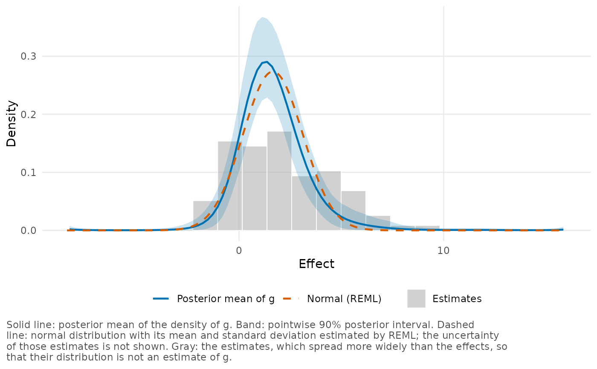
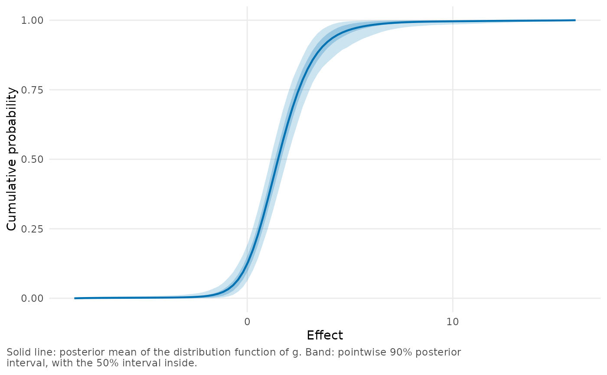
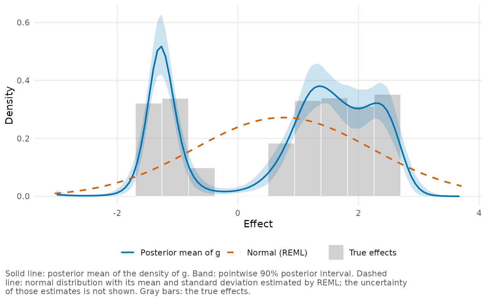
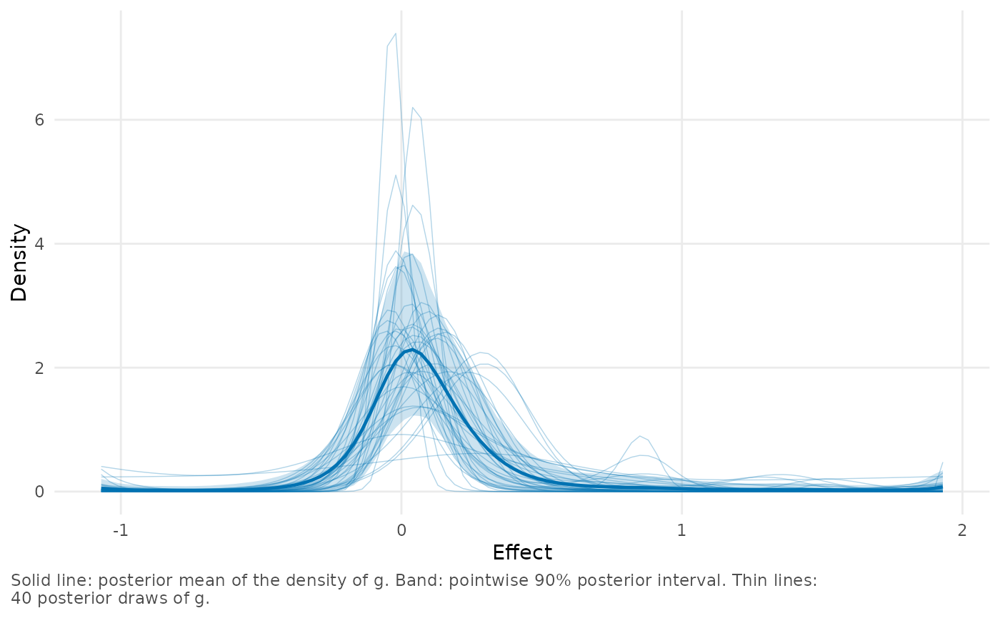

plot_g() plots the estimate of \(g\), the distribution of the true
effects: its density, its cumulative distribution function (CDF) or its
probabilities on the grid. The posterior mean is shown as a line and a
pointwise posterior interval as a band. The estimates, a normal
distribution, known true effects, individual posterior draws of \(g\)
and other estimates of \(g\) can be added to the plot.
Arguments
- x
A
bef_fitobject created bybayes_efron_fit().- type
What to plot:
"density"(the default),"cdf"for the cumulative distribution function, or"mass"for the probabilities of the grid points. With"mass", only a rug of the estimates and posterior draws of \(g\) can be added to the plot.- level
Posterior probability of the pointwise band, a number between 0 and 1.
- inner_level
Posterior probability of a second, darker band inside the first, a number between 0 and
level. IfNULL(the default), no inner band is shown.- observed
How to show the estimates:
"none"(the default),"histogram"or"rug". Whentype = "cdf","histogram"shows their empirical distribution function.- normal
If
TRUE, the normal distribution described in Details is added. Can also be a numeric vectorc(mean = , sd = ), which adds the normal distribution with that mean and standard deviation, in the units of the estimates.- truth
For simulated data, the true effects. A numeric vector is shown as a histogram (with
type = "cdf", as an empirical distribution function). Can also be a function of the effect that returns the true density (withtype = "cdf", the true distribution function). IfNULL(the default), no true effects are shown.- draws
Number of individual posterior draws of \(g\) to add as thin lines, in addition to the posterior mean and the band. At most the number of draws in the fit can be shown.
- compare
An optional named list of other estimates of \(g\), each plotted as one line. An element can be a
bef_fitobject or a data frame with a columnxof effect values, in the units of the estimates, and a columndensityorcdf.- xlim
Limits of the horizontal axis, a numeric vector of length 2 in the units of the plot, i.e., after multiplication by
scale. IfNULL(the default), the limits are chosen as described in Details.- scale
Positive number by which effect values are multiplied and densities divided, e.g.,
scale = 100to show differences in proportions as percentage points.- ...
These dots are for future extensions and must be empty.
Details
The line and the band are the columns mean, lower and upper
returned by g_summary(). For point masses, the density is the
probability of a grid point divided by the grid spacing, and the CDF
spreads that probability evenly over the cell around the grid point.
The band is pointwise: the stated posterior probability applies to the curve at each effect value separately, not to the whole curve at once.
normal = TRUE adds the distribution of effects under the normal
random-effects model, with its mean and standard deviation estimated by
restricted maximum likelihood (REML) from the same estimates. This is a
plug-in estimate, shown as a single curve without a band, because the
uncertainty in the estimated mean and standard deviation is ignored.
Note that a histogram of the estimates is not an estimate of \(g\). The estimates include sampling error, so they are more spread out than the true effects. The histogram shows the data to which the model was fitted.
The horizontal axis covers the grid unless the grid is much wider than
the region where \(g\) has its mass, which would leave long empty
stretches on both sides. If the central 99.9% of the posterior mean of
\(g\) covers less than 60% of the grid, the axis is limited to that
region plus a small margin. Use xlim to set other limits.
Examples
# The callback gaps in percentage points, with a histogram of the
# estimates and the normal distribution of the random-effects model.
plot_g(krw_fit, observed = "histogram", normal = TRUE, scale = 100)

# The distribution function, with a 50% band inside the 90% band.
plot_g(krw_fit, type = "cdf", inner_level = 0.5, scale = 100)

# Simulated sites with known true effects.
plot_g(twin_towers_fit, truth = twin_towers$theta_true, normal = TRUE)

# The posterior mean and band with 40 posterior draws of g.
plot_g(raudenbush_fit, draws = 40)
